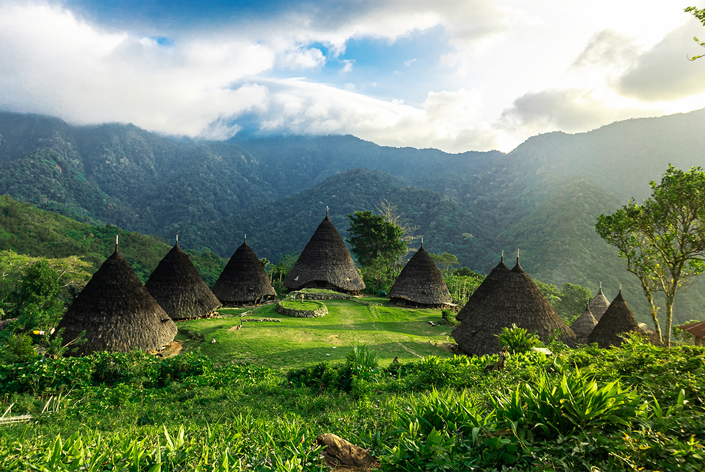

GALERI DESA
Sudut Indah Pedesaan


SELAMAT DATANG DI DESA ASRI
Menikmati pesona pedesaan yang hijau, udara yang segar, hamparan sawah yang luas, dan keramahan masyarakatnya.
Jelajahi Desa ↓
MENGENAL DESA KAMI
Desa Asri merupakan gambaran kehidupan pedesaan yang penuh ketenangan, keindahan alam, dan kebersamaan. Dikelilingi persawahan, pepohonan rindang, serta pemandangan alam yang menawan.
Kehidupan masyarakatnya menjunjung tinggi gotong royong, budaya, dan tradisi yang diwariskan dari generasi ke generasi.
Kenali kehidupan desa →Melestarikan alam agar tetap bersih dan asri.
GALERI DESA
HUBUNGI KAMI
Ingin mengetahui lebih banyak tentang keindahan, kehidupan, dan potensi desa kami? Silakan hubungi atau ikuti media sosial kami.